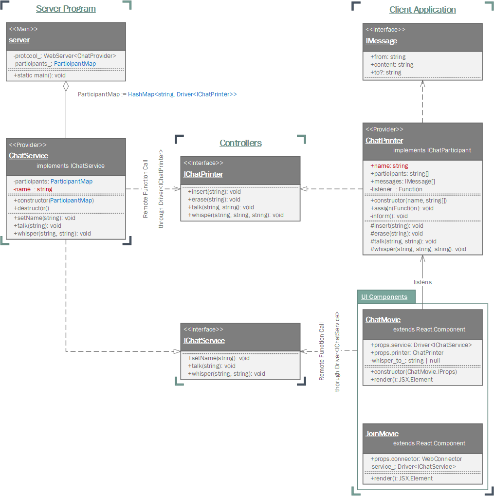

Chat Application
1. Outline

Create a simple live chat application.
- Demo site: http://samchon.org/chat
- Code repository: https://github.com/samchon/tgrid.projects.chat
When practicing network programming, most of them start from creating live chat application. We'll also follow the custom. As the first example project of TGrid, we will create a live chat server program. We will also create a client program (web application) to participate in the chat.
However, since Chat Application is the first tutorial project of the TGrid, we will make it very simple with low difficulty. There will only be one chat room on the server. Therefore, all clients connecting to the server will gather and talk together. The client application will also be made very simple with ReactJS.
If you are curious about the code of a chat application with multiple rooms, please refer to this next example project, Othello Game. Of course, the sbuject is Othello Game, as you can see, but there are a number of rooms in the game, where players and observers can talk to each other.
2. Design

The Chat Application we'll build is very simple. There is only one chat room on the server, and all clients connecting to that server will only talk to each other here. Therefore, the features server and client must provide to each other is also very concise.
The features must be provided from server to clients are, just let client to set its name and let having conversation with each other. The other features provided fromn clients to server are much easier and simpler, which can be summarized in just one word. It is informing the client what happened in the chat room.
- What the server must provide to clients
- to specify name
- to talk to everyone
- to whisper to an individual
- What clients must provide to the server
- to add and remove participants
- to print conversation content
- to print whispered content
3. Implementation
3.1. Features
controllers/IChatService.ts
IChatService is a Controller defining provided freatures from server to clients. Precisely, the client programs call remote functions using the Driver<IChatService> object.
So what's the first thing a client connecting to a server should do? It's just naming itself (setName). After that, the client will talk to everyone (talk) or whisper to a special participant (whisper).
export interface IChatService
{
/**
* Set name and get participants.
*
* @param name Value to set
* @return List of participants, if duplicated name exists then returns false
*/
setName(name: string): string[] | false;
/**
* Talk to everyone.
*
* @param content Content to say
*/
talk(content: string): void;
/**
* Whisper to someone.
*
* @param to Someone to listen
* @param content Content to whisper
*/
whisper(to: string, content: string): void;
}
controllers/IChatPrinter.ts
IChatPrinter is a Controller defining provided features from client to server. Precisely, the server program call remote functions using the Driver<IChatPrinter> object.
Also, looking at the functions defined in the IChatPrinter, its purpose is clearly shown up. The purpose is, the client wants server to inform it what is happening in the chat room.
Server informs clients which participants are nelwy come and which participants are existed by calling insert or erase methods of Driver<IChatPrinter> object. Also, server delivers conversations by calling talk and whisper methods of the Driver<IChatPrinter> object.
export interface IChatPrinter
{
/**
* Insert a new participant.
*
* @param name A new name
*/
insert(name: string): void;
/**
* Erase ordinary participant.
*
* @param name The name to erase
*/
erase(name: string): void;
/**
* Print talking to everyone.
*
* @param from speaker
* @param content content to print
*/
talk(from: string, content: string): void;
/**
* Print whispering.
*
* @param from speaker
* @param to listener
* @param content content to print
*/
whisper(from: string, to: string, content: string): void;
}
3.2. Server Program
providers/ChatService.ts
ChatService is a Provider class provided from server to client.
At the same time, ChatService has a responsibility to propagating events from chat room to all participants. Whenever client remotely call functions of ChatService using Driver<IChatService, the ChatService object delivers the event to all of the participants using participants_: HashMap<string, Driver<IChatPrinter>>.
When a client has ben disconnected, main function of the server program calls ChatService.destructor() to inform other participants. Of course, same member variable participants_: HashMap<string, Driver<IChatPrinter>> would be used again.
import { Driver } from "tgrid/components/Driver";
import { HashMap } from "tstl/container/HashMap";
import { IChatService } from "../controllers/IChatService";
import { IChatPrinter } from "../controllers/IChatPrinter";
export class ChatService implements IChatService
{
private participants_: HashMap<string, Driver<IChatPrinter>>;
private printer_: Driver<IChatPrinter>;
private name_?: string;
/* ----------------------------------------------------------------
CONSTRUCTORS
---------------------------------------------------------------- */
public constructor
(
participants: HashMap<string, Driver<IChatPrinter>>,
printer: Driver<IChatPrinter>
)
{
this.participants_ = participants;
this.printer_ = printer;
}
public destructor(): void
{
if (this.name_ === undefined)
return;
// ERASE FROM PARTICIPANTS
this.participants_.erase(this.name_);
// INFORM TO OTHERS
for (let it of this.participants_)
{
let p: Promise<void> = it.second.erase(this.name_);
p.catch(() => {});
}
}
/* ----------------------------------------------------------------
INTERACTIONS
---------------------------------------------------------------- */
public setName(name: string): string[] | false
{
if (this.participants_.has(name))
return false;
// ASSIGN MEMBER
this.name_ = name;
this.participants_.emplace(name, this.printer_);
// INFORM TO PARTICIPANTS
for (let it of this.participants_)
{
let printer: Driver<IChatPrinter> = it.second;
if (printer === this.printer_)
continue;
let promise: Promise<void> = printer.insert(name);
promise.catch(() => {});
}
return [...this.participants_].map(it => it.first);
}
public talk(content: string): void
{
// MUST BE NAMED
if (this.name_ === undefined)
throw new Error("Name is not specified yet.");
// INFORM TO PARTICIPANTS
for (let it of this.participants_)
{
let p: Promise<void> = it.second.talk(this.name_, content);
p.catch(() => {});
}
}
public async whisper(to: string, content: string): Promise<void>
{
// MUST BE NAMED
if (this.name_ === undefined)
throw new Error("Name is not specified yet.");
else if (this.participants_.has(to) === false)
throw new Error("Unable to find the matched name");
//----
// INFORM TO PARTICIPANTS
//----
// TO SPEAKER
let from: string = this.name_;
this.printer_.whisper(from, to, content).catch(() => {});
// TO LISTENER
if (from !== to)
{
let target: Driver<IChatPrinter> = this.participants_.get(to);
target.whisper(from, to, content).catch(() => {});
}
}
}
server.ts
The main code of the server program is really simple.
You can create a websocket server and provide a ChatService object as a Provider to each client . When the client closes the connection, call the ChatService.destructor() method to remove the client from the chat room's participants list.
import { WebServer, WebAcceptor } from "tgrid/protocols/web";
import { Driver } from "tgrid/components/Driver";
import { HashMap } from "tstl/container/HashMap";
import { IChatPrinter } from "./controllers/IChatPrinter";
import { ChatService } from "./providers/ChatService";
import { Global } from "./Global";
async function main(): Promise<void>
{
let server: WebServer<ChatService> = new WebServer();
let participants: HashMap<string, Driver<IChatPrinter>> = new HashMap();
await server.open(Global.PORT, async (acceptor: WebAcceptor<ChatService>) =>
{
// PROVIDE SERVICE
let driver: Driver<IChatPrinter> = acceptor.getDriver<IChatPrinter>();
let service: ChatService = new ChatService(participants, driver);
await acceptor.accept(service);
// DESTRUCTOR
await acceptor.join();
service.destructor();
});
}
main();
3.3. Client Application
providers/ChatPrinter.ts
ChatPrinter is a Provider class provided from client to server .
Whenever server remotely calls function of ChatPrinter using Driver<IChatPrinter>, ChatPrinter archives writes it into its member variables. After the archiving, ChatPrinter calls the event listener (which registerted into listener_: ()=>void through assign() method) to inform ChatMovie that something has been changed in the chat room.
import { IChatPrinter } from "../controllers/IChatPrinter";
import { HashSet } from "tstl/container/HashSet";
export class ChatPrinter implements IChatPrinter
{
private listener_?: ()=>void;
public readonly name: string;
public readonly participants: HashSet<string>;
public readonly messages: ChatPrinter.IMessage[];
/* ----------------------------------------------------------------
CONSTRUCTOR
---------------------------------------------------------------- */
public constructor(name: string, participants: string[])
{
this.name = name;
this.participants = new HashSet(participants);
this.messages = [];
}
public assign(listener: ()=>void): void
{
this.listener_ = listener;
}
private _Inform(): void
{
if (this.listener_)
this.listener_();
}
/* ----------------------------------------------------------------
METHODS FOR REMOTE FUNCTION CALL
---------------------------------------------------------------- */
public insert(name: string): void
{
this.participants.insert(name);
this._Inform();
}
public erase(name: string): void
{
this.participants.erase(name);
this._Inform();
}
public talk(from: string, content: string): void
{
this.messages.push({
from: from,
content: content
});
this._Inform();
}
public whisper(from: string, to: string, content: string): void
{
this.messages.push({
from: from,
to: to,
content: content
});
this._Inform();
}
}
export namespace ChatPrinter
{
export interface IMessage
{
from: string;
content: string;
to?: string;
}
}
app.tsx
The main function code of the client program is also very short and simple.
The main function connects to the websocket chat server and moves to the JoinMovie. JoinMovie is designed to set your name to join the chat room, but it would be much better to see its detailed code by yourself.
import React from "react";
import ReactDOM from "react-dom";
import { WebConnector } from "tgrid/protocols/web/WebConnector";
import { Global } from "./Global";
import { JoinMovie } from "./movies/JoinMovie";
window.onload = async function ()
{
let connector: WebConnector = new WebConnector();
await connector.connect(`ws://${window.location.hostname}:${Global.PORT}`);
ReactDOM.render
(
<JoinMovie connector={connector} />,
document.body
);
}
movies/JoinMovie.tsx
In JoinMovie is desinged to set name and inform it to server.
When user inputs its name and clicks the "Participate in" button, JoinMovie remotely calls ChatService.setName() method using Driver<IChatService> object. If returned type is Array of string which means participants of the chat room, then JoinMovie converts screen to ChatMovie directly.
import React from "react";
import ReactDOM from "react-dom";
import { Panel, Button, Glyphicon } from "react-bootstrap";
import { WebConnector } from "tgrid/protocols/web/WebConnector";
import { Driver } from "tgrid/components/Driver";
import { IChatService } from "../controllers/IChatService";
import { ChatPrinter } from "../providers/ChatPrinter";
import { ChatMovie } from "./ChatMovie";
import { Global } from "../Global";
export class JoinMovie extends React.Component<JoinMovie.IProps>
{
/* ----------------------------------------------------------------
CONSTRUCTOR
---------------------------------------------------------------- */
public componentDidMount()
{
let input: HTMLInputElement = document.getElementById("name_input") as HTMLInputElement;
input.select();
}
/* ----------------------------------------------------------------
EVENT HANDLERS
---------------------------------------------------------------- */
private _Handle_keyUp(event: React.KeyboardEvent): void
{
if (event.keyCode === 13)
this._Participate();
}
private async _Participate(): Promise<void>
{
let input: HTMLInputElement = document.getElementById("name_input") as HTMLInputElement;
let name: string = input.value;
if (name === "")
{
alert("Name cannot be empty");
return;
}
let connector: WebConnector = this.props.connector;
let service: Driver<IChatService> = connector.getDriver<IChatService>();
let participants: string[] | false = await service.setName(name);
if (participants === false)
{
alert("Duplicated name");
return;
}
let printer: ChatPrinter = new ChatPrinter(name, participants);
connector.setProvider(printer);
ReactDOM.render(<ChatMovie service={service} printer={printer} />, document.body);
}
/* ----------------------------------------------------------------
RENDERER
---------------------------------------------------------------- */
public render(): JSX.Element
{
return <Panel>
<Panel.Heading>
<Panel.Title>
<Glyphicon glyph="list" />
{" Chat Application "}
</Panel.Title>
</Panel.Heading>
<Panel.Body>
<h1> Chat Application </h1>
<p> Demo Project of {this._Render_link(Global.TGRID, "TGrid")} </p>
<ul>
<li> {this._Render_link(Global.REPOSITORY, "Github Repository")} </li>
<li> Guide Documents </li>
<ul>
<li> {this._Render_link(Global.GUIDE_EN, "English")} </li>
<li> {this._Render_link(Global.GUIDE_KR, "한국어")} </li>
</ul>
</ul>
<p>
Insert your name:
<input id="name_input"
type="text"
onKeyUp={this._Handle_keyUp.bind(this)} />
</p>
</Panel.Body>
<Panel.Footer>
<Button bsStyle="primary"
onClick={this._Participate.bind(this)}>
<Glyphicon glyph="share-alt" />
{" Participate in"}
</Button>
</Panel.Footer>
</Panel>
}
private _Render_link(url: string, text: string): JSX.Element
{
return <a href={url} target="_blank">{text}</a>;
}
}
namespace JoinMovie
{
export interface IProps
{
connector: WebConnector;
}
}
movies/ChatMovie.tsx
Conversations are done in the ChatMovie.
When user inputs conversation or whisper to someone, ChatMovie remotely calls server's method through Driver<IChatService>; ChatService.talk() or ChatService.whisper().
Also, ChatMovie registers an event listeners to the ChatPrinter. Therefore, whenever the event listener is called, ChatMovie refreshes the screen immediately and it helps ChatMovie to keep the most-up-date screen of the chat room continuosly.
import React from "react";
import { Panel,
ListGroup, ListGroupItem,
Button, FormControl, InputGroup,
Glyphicon
} from "react-bootstrap";
import { Driver } from "tgrid/components/Driver";
import { IChatService } from "../controllers/IChatService";
import { ChatPrinter } from "../providers/ChatPrinter";
import { Global } from "../Global";
export class ChatMovie
extends React.Component<ChatMovie.IProps>
{
private whisper_to_: string | null = null;
private get input_(): HTMLInputElement
{
return document.getElementById("message_input") as HTMLInputElement;
}
/* ----------------------------------------------------------------
CONSTRUCTOR
---------------------------------------------------------------- */
public constructor(props: ChatMovie.IProps)
{
super(props);
// WHENEVER EVENT COMES
let printer: ChatPrinter = props.printer;
printer.assign(() =>
{
// ERASE WHISPER TARGET
if (this.whisper_to_ !== null && printer.participants.has(this.whisper_to_) === false)
this.whisper_to_ = null;
// REFRESH PAGE
this.setState({})
});
}
public componentDidMount()
{
let input: HTMLInputElement = document.getElementById("message_input") as HTMLInputElement;
input.select();
}
public componentDidUpdate()
{
let element: HTMLElement = document.getElementById("message_body")!;
element.scrollTop = element.scrollHeight - element.clientHeight;
}
/* ----------------------------------------------------------------
EVENT HANDLERS
---------------------------------------------------------------- */
private _Handle_keyUp(event: React.KeyboardEvent<FormControl>): void
{
if (event.keyCode === 13)
this._Send_message();
}
private _Send_message(): void
{
let content: string = this.input_.value;
let service: Driver<IChatService> = this.props.service;
if (this.whisper_to_ === null)
service.talk(content);
else
service.whisper(this.whisper_to_, content);
this.input_.value = "";
this.input_.select();
}
private _Select_participant(name: string): void
{
this.whisper_to_ = (this.whisper_to_ === name)
? null
: name;
this.input_.select();
this.setState({});
}
/* ----------------------------------------------------------------
RENDERER
---------------------------------------------------------------- */
public render(): JSX.Element
{
let printer: ChatPrinter = this.props.printer;
let myName: string = printer.name;
let participants: string[] = [...printer.participants];
let messages: ChatPrinter.IMessage[] = printer.messages;
return <div className="main">
<Panel bsStyle="info"
className="participants">
<Panel.Heading className="panel-pincer">
<Panel.Title>
<Glyphicon glyph="user" />
{` Participants: #${participants.length}`}
</Panel.Title>
</Panel.Heading>
<Panel.Body className="panel-body">
<ListGroup>
{participants.map(name =>
{
return <ListGroupItem active={name === myName}
bsStyle={name === this.whisper_to_ ? "warning" : undefined}
onClick={this._Select_participant.bind(this, name)}>
{name === this.whisper_to_
? "> " + name
: name
}
</ListGroupItem>;
})}
</ListGroup>
</Panel.Body>
<Panel.Footer className="panel-pincer">
Demo Project of <a href={Global.TGRID} target="_blank">TGrid</a>
</Panel.Footer>
</Panel>
<Panel bsStyle="primary"
className="messages">
<Panel.Heading className="panel-pincer">
<Panel.Title>
<Glyphicon glyph="list" />
{" Message"}
</Panel.Title>
</Panel.Heading>
<Panel.Body id="message_body"
className="panel-body">
{messages.map(msg =>
{
let fromMe: boolean = (msg.from === myName);
let style: React.CSSProperties = {
textAlign: fromMe ? "right" : undefined,
fontStyle: msg.to ? "italic" : undefined,
color: msg.to ? "gray" : undefined
};
let content: string = msg.content;
if (msg.to)
{
let head: string = (msg.from === myName)
? `(whisper to ${msg.to})`
: "(whisper)";
content = `${head} ${content}`;
}
return <p style={style}>
<b style={ { fontSize: 18 } }> {msg.from} </b>
<br/>
{content}
</p>;
})}
</Panel.Body>
<Panel.Footer className="panel-pincer">
<InputGroup>
<FormControl id="message_input"
type="text"
onKeyUp={this._Handle_keyUp.bind(this)} />
<InputGroup.Button>
<Button onClick={this._Send_message.bind(this)}>
{this.whisper_to_ === null
? <React.Fragment>
<Glyphicon glyph="bullhorn" />
{" Talk to everyone"}
</React.Fragment>
: <React.Fragment>
<Glyphicon glyph="screenshot" />
{` Whisper to ${this.whisper_to_}`}
</React.Fragment>
}
</Button>
</InputGroup.Button>
</InputGroup>
</Panel.Footer>
</Panel>
</div>;
}
}
export namespace ChatMovie
{
export interface IProps
{
service: Driver<IChatService>;
printer: ChatPrinter;
}
}